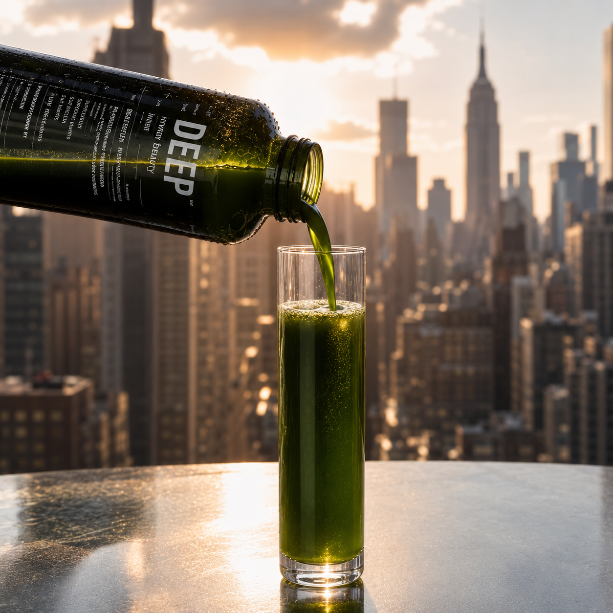
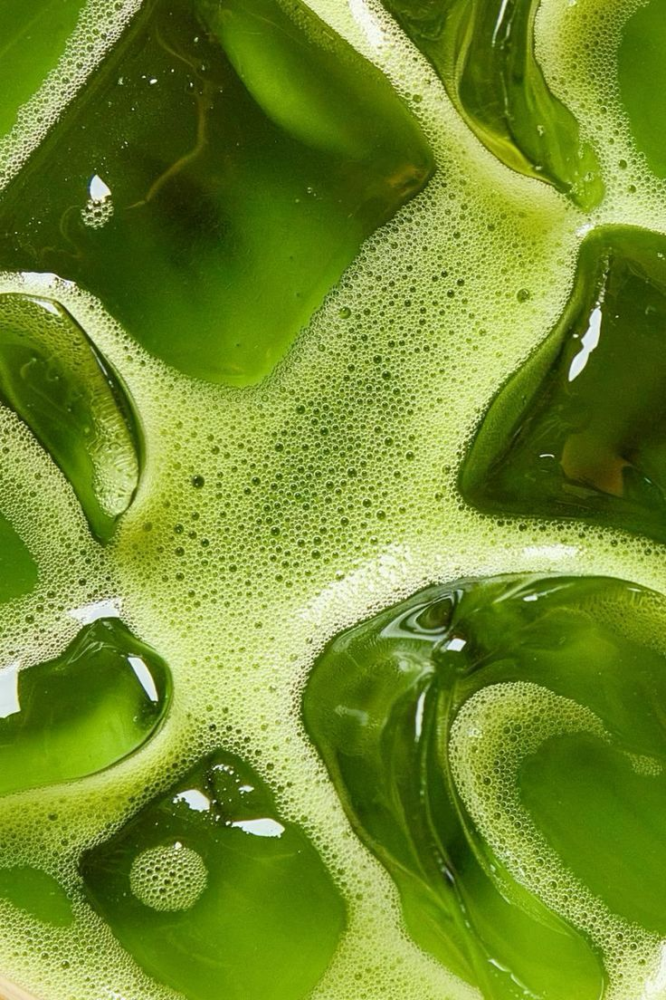
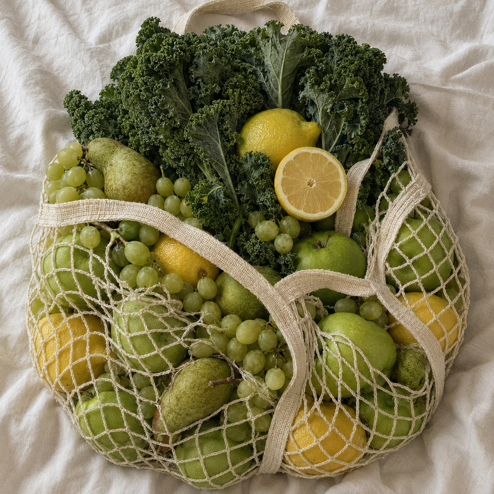
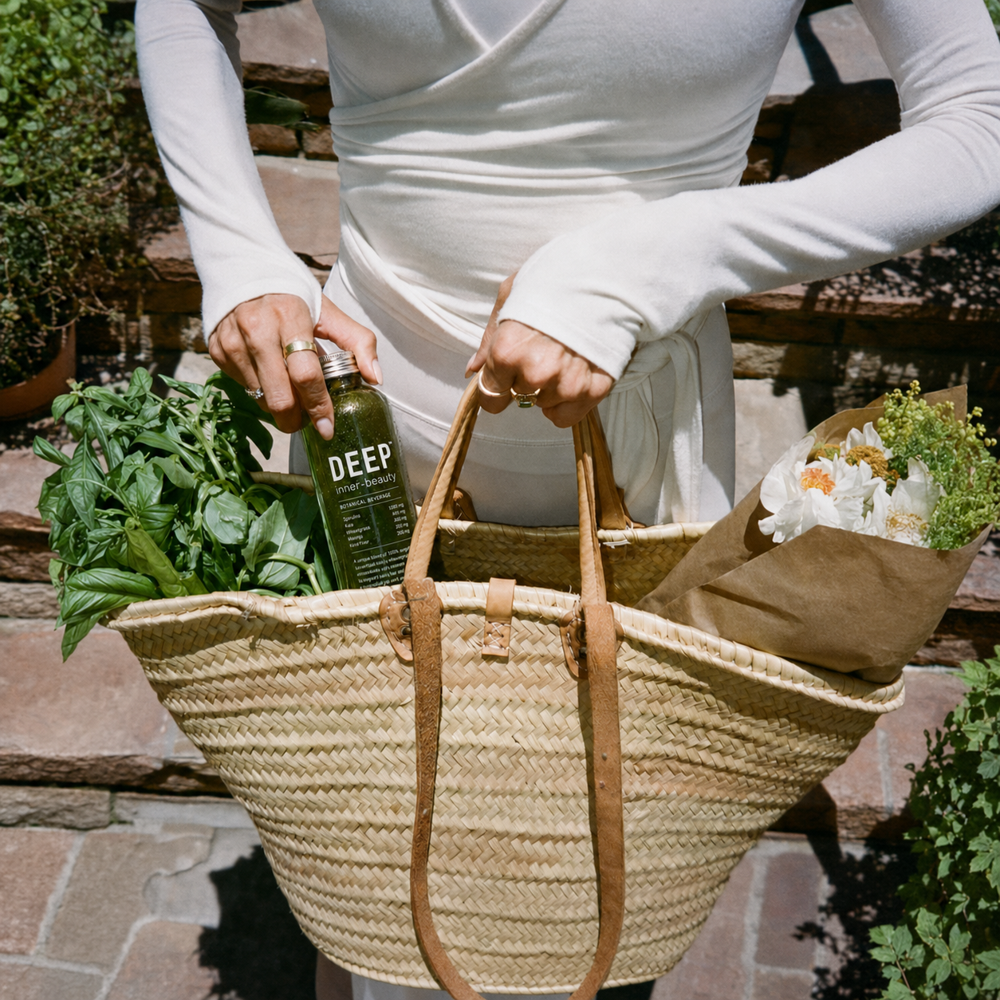

매일 마시는 초록빛 아름다움.
싱그러운 케일과 그린 프루트에 저분자 콜라겐 펩타이드, 히알루론산, 비타민C와 글루타치온을 담은 데일리 이너뷰티 드링크입니다.
아름다움은 하루의 특별한 관리보다 매일 반복되는 작은 습관에서 시작됩니다.
DEEP™ LIRA DAILY GREEN JUICE는 케일과 청포도, 청사과, 배, 레몬의 싱그러운 주스에 콜라겐과 수분·항산화 영양을 더했습니다. 정제나 분말을 따로 챙길 필요 없이 하루 한 병을 맛있게 마시는 것만으로 완성되는 LIRA의 데일리 이너뷰티 루틴입니다.
"하루 한 병으로 시작하는 몸 안쪽의 뷰티 루틴."

바르는 LIRA가 피부에 수분과 영양을 공급하고 보습막으로 보호한다면, 마시는 LIRA는 일상 속에서 콜라겐과 수분·항산화 영양을 간편하게 채워줍니다.
피부에 바르는 고밀도 보습·탄력 관리
매일 마시는 콜라겐·수분 영양 루틴
"피부에는 바르고, 아름다움은 매일 마시다."

"케일의 싱그러움과 그린 프루트의 산뜻함이 만나다."

"가볍게 흔들고, 맛있게 마시고, 매일의 아름다움을 채우다."
피부를 위한 데일리 이너뷰티 루틴의 중심이 되는 저분자 콜라겐 펩타이드를 한 병에 담았습니다.
정제나 분말을 따로 챙길 필요 없이 산뜻한 그린 주스와 함께 매일 간편하게 콜라겐을 섭취할 수 있습니다.
"거창한 관리가 아닌, 매일 이어지는 콜라겐 습관."
히알루론산을 콜라겐과 함께 담아 피부를 위한 수분 영양까지 한 병으로 간편하게 섭취할 수 있도록 설계했습니다.
"몸 안쪽부터 시작하는 촉촉한 뷰티 루틴."
비타민C를 더해 바쁜 일상 속에서 필요한 영양을 간편하게 챙길 수 있도록 했습니다.
레몬과 청사과의 산뜻한 풍미와 어우러져 주스의 깨끗하고 상쾌한 맛을 완성합니다.
"산뜻한 맛으로 채우는 매일의 비타민."
120ml의 여유로운 용량으로 농축 샷처럼 급하게 삼키는 것이 아니라, 주스처럼 천천히 맛있게 즐길 수 있습니다.
